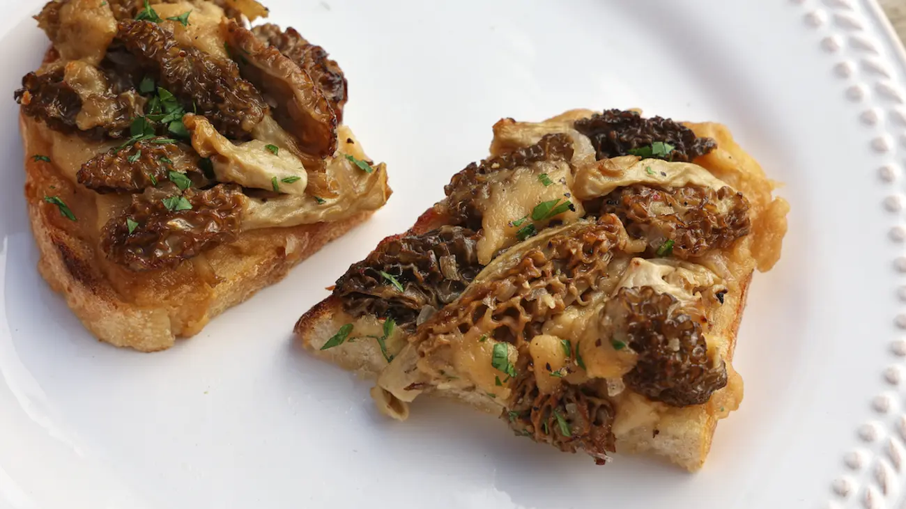

Morel Mushrooms On Toast

Chef's Notes
This recipe takes a few pointers from the
British dish Welsh rarebit, but with a couple
tweaks to make the cheese spread less
overpowering. Normally, I would reach for
sharp cheddar for just about any occasion, but
less is more in this recipe.
The same applies for the beer portion.
Traditional Welsh rarebit recipes often call
for stout or strong ale, but I find that
darker beers made the cheese sauce too bitter.
Mild cheddar and light beer offer a good
compromise with the delicate flavor of morel
mushrooms. Garnish these mushroom toasts with
fresh parsley or chive.
ingredients
- 1 lb. fresh morel mushrooms
- ¾ cup light beer, heated
- 5 tbsp. butter, plus extra
- 3 tbsp. flour
- 1 large shallot, minced
- Salt and pepper, to taste
- 2 cups coarsely shredded mild white cheddar
- 2 tsp. Worcestershire sauce
- ½ tsp. ground mustard
- Minced fresh parsley, to taste
- 4-6 large slices of crusty bread
Preperation
- If needed, slice larger morel mushrooms
into smaller pieces. In a medium saucepan
over medium-high heat, melt 2 tablespoons
of butter. Add mushrooms and cook until
softened and most of the moisture has
evaporated, stirring frequently.
- Add minced shallot with a generous pinch
of salt and sauté for additional minute.
Transfer cooked mushrooms to a bowl,
scraping as much shallot out of the
saucepan as possible.
- Lower heat to medium and melt remaining
3 tablespoons of butter in the saucepan.
Add flour and whisk for 2 minutes. Turn
heat down to low and slowly whisk in ¾ cup
of hot beer to form a roux.
- Next, stir in 1½ cups of grated cheddar
until fully melted and incorporated to
form a thick paste—add a splash more beer
if needed. Season with Worcestershire
sauce and ground mustard. Take off heat.
- Spread butter on one side of each slice
of bread, and toast until golden around
the edges. Remove bread from oven and
spread beer-cheese spread onto each slice
and pile with sautéed morel mushrooms.
- If you like, sprinkle remaining grated cheddar
cheese on top. Broil until cheese is melted and
mushroom edges look slightly toasted. Season
toasts with salt and pepper to taste, garnish
with fresh parsley, and serve immediately.